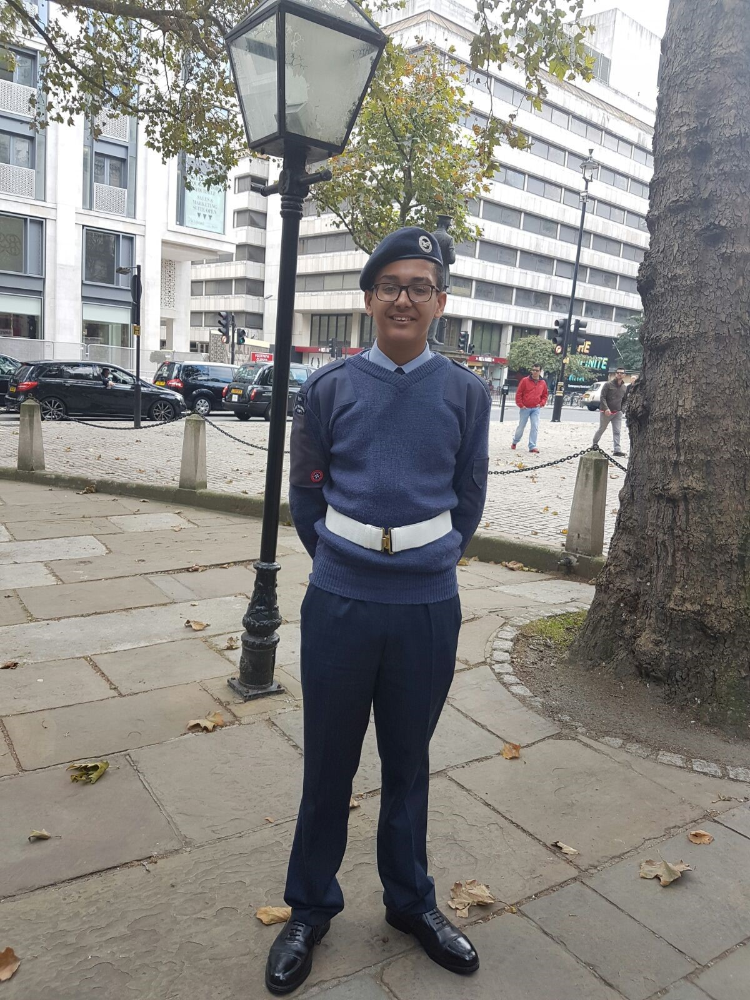

About me
My name is Steven Fleming, I am an 18 year old student currently studing at City University of London with the goal of attaining a bachelor's degree in Computer Science. I was born and grew up in london for all of my life, mainly staying around the north side.
Goals and Ambitions
In the future some goals and ambitions of mine would be to:
Travel more and explore the world.
Enter a field of work which i enjoy and ensures job security.
Learn different languages and cultures.
Extracurricular Activities
Currently I am a member of the City University Motorsport society, which consists of regularly held karting events which I enjoy.
Travelling
So far i've traveled to many places in the uk such as Newcastle, Bedford, Alnmouth and Nottingham. However in terms of outside of the uk the biggest place i've been to is Kingston,Jamaica.